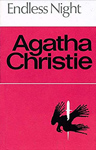
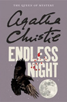
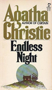
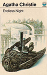
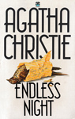
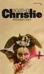
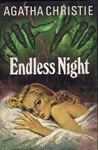
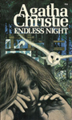

|
||
1967 - Endless Night |
||
Endless Night is a crime novel by Agatha Christie, first published in the UK by the Collins Crime Club on 30 October 1967 and in the US by Dodd, Mead and Company the following year. It was one of her favourites of her own works and received some of the warmest critical notices of her career upon publication. The title comes from William Blake's Auguries of Innocence: "Every night and every morn, Some to misery are born, Every morn and every night, Some are born to sweet delight. Some are born to sweet delight, Some are born to endless night." |
||
        |
||
Screen Versions |
||
A 1972 film was made, starring Hayley Mills, Britt Ekland, Per Oscarsson, Hywel Bennett and George Sanders (who committed suicide before the film's release). Christie reportedly had some reservations about the use of sex scenes to enliven the plot (there is only one in the finished film, with very brief nudity from Ms Ekland). This version did not include Miss Marple, who did not appear in the original novel. Although the book did not feature Miss Marple, it is part of the sixth series of Agatha Christie's Marple, starring Julia McKenzie. It aired on ITV on Sunday 29 December 2013. This adaptation by Kevin Elyot remains fairly faithful to the book, although, in addition to adding Miss Marple, it identifies the boyhood friend murdered for his wristwatch by Rogers with the architect's brother, who does not appear in the original novel. The architect (named Robbie Hayman in this TV adaption) ends up burning down the house he has designed for Rogers after discovering his brother's watch in Rogers' desk drawer. |
||
 |
||
2013 |
||
Miss Marple |
- |
Julia McKenzie |
Mike Rogers |
- |
Tom Hughes |
Robbie Hayman |
- |
Aneurin Barnard |
Pete Hayman |
- |
Adam Wadsworth |
Ellie |
- |
Joanna Vanderham |
Marjorie Phillpot |
- |
Wendy Craig |
Mrs. Lee |
- |
Janet Henfrey |
Mrs. Rogers |
- |
Tamzin Outhwaite |
Lippincott |
- |
William Hope |
Cora Van Stuyvesant |
- |
Glynis Barber |
Frank Stanford |
- |
Michael McKell |
Greta Anderson |
- |
Birgitte Hjort Sørensen |
Dr. Shaw |
- |
Hugh Dennis |
Claudia Hardcastle |
- |
Rosalind Halstead |
Sergeant Keene |
- |
Celyn Jones |
Passer-By |
- |
Caroline O'Neill |
Coroner |
- |
Stephen Churchett |
Father Jayne |
- |
Erick Hayden |
Directors |
- |
David Moore |
Screenplay |
- |
Kevin Elyot |
 |
||